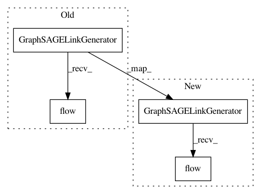

e6839888aa4beb86b59fd79dd9ed951bc1bfb049,demos/link-prediction/graphsage/cora-links-example.py,,train,#Any#Any#Any#Any#Any#Any#Any#,88
Before Change
// Mapper feeds link data from sampled subgraphs to GraphSAGE model
// We need to create two mappers: for training and testing of the model
train_gen = GraphSAGELinkGenerator(
G_train, batch_size, num_samples, name="train"
).flow(edge_ids_train, edge_labels_train, shuffle=True)
test_gen = GraphSAGELinkGenerator(
G_test, batch_size, num_samples, name="test"
).flow(edge_ids_test, edge_labels_test)
After Change
// Mapper feeds link data from sampled subgraphs to GraphSAGE model
// We need to create two mappers: for training and testing of the model
train_gen = GraphSAGELinkGenerator(G_train, batch_size, num_samples)
train_flow = train_gen.flow(edge_ids_train, edge_labels_train, shuffle=True)
test_gen = GraphSAGELinkGenerator(G_test, batch_size, num_samples)
test_flow = test_gen.flow(edge_ids_test, edge_labels_test)
In pattern: SUPERPATTERN
Frequency: 3
Non-data size: 4
Instances
Project Name: stellargraph/stellargraph
Commit Name: e6839888aa4beb86b59fd79dd9ed951bc1bfb049
Time: 2019-10-22
Author: andrew.docherty@data61.csiro.au
File Name: demos/link-prediction/graphsage/cora-links-example.py
Class Name:
Method Name: train
Project Name: stellargraph/stellargraph
Commit Name: d5adad4a667886e4790e2cfcf262952034b6f698
Time: 2018-09-10
Author: docherty@gmail.com
File Name: demos/link-prediction_graphsage/cora-links-example.py
Class Name:
Method Name: train
Project Name: stellargraph/stellargraph
Commit Name: e6839888aa4beb86b59fd79dd9ed951bc1bfb049
Time: 2019-10-22
Author: andrew.docherty@data61.csiro.au
File Name: tests/mapper/test_link_mappers.py
Class Name: Test_GraphSAGELinkGenerator
Method Name: test_GraphSAGELinkGenerator_unsupervisedSampler_sample_generation